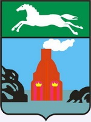

История: В 1730 году посланцы известного уральского заводчика Акинфия Демидова, занятые поисками удобного места постройки нового завода, выбрали устье реки Барнаулки. Выбор оказался довольно удачный. Заводы того времени были крайне зависимы от воды, приводившей в движение машины и механизмы. Необходим был также и лес – из него выжигали древесный уголь для медеплавильного производства.
На Алтае была найдена серебряная руда, и в 1747 году императрица Елизавета Петровна издает указ, которым значительные территории юга Западной Сибири были превращены в царское поместье. В XVIII-первой половине XIX века на Алтае выплавляли 90% российского серебра. Поэтому не случайно Барнаул за короткое время из небольшого заводского посада стал в 1771 году «горным городом» - одним из крупнейших в Сибири.
В Барнауле развивалось и другое производство. В 1864 году на левом берегу речки Пивоварки инженер М.Б. Пранг открыл первый в России содовый завод, проработавший около полувека. Более десяти сортов пива выпускали три пивоваренных завода, вырабатывались колбасные и кондитерские изделия. И все же Барнаул оставался городом торговым: в 1912 г. здесь насчитывалось более 500 магазинов и лавок, в которых вели торговлю купцы Морозовы, Смирновы, Суховы, Поляковы, Сбитневы, Поскотиновы и многие другие.
В 1932 году в Барнауле был заложен крупнейший в Западной Сибири меланжевый комбинат.
Во время Великой Отечественной войны в Барнауле разместилось около ста промышленных предприятий из Москвы, Ленинграда, Одессы, других городов, временно оккупированных фашистскими войсками. Именно в это время в городе стали работать крупные машиностроительные предприятия – заводы «Трансмаш», котельный, станкостроительный, выпустил первую продукцию радиозавод.
Население: 700326 чел.
Географическое положение: Барнаул – административный центр Алтайского края. он расположен на северо-востоке Приобского плато, на левом берегу Оби в месте впадения реки Барнаулки в Обь.
Климат: средняя температура января -17,5 С, июля +19,8 С. Годовое количество осадков – 477 мм.
Экономические особенности: Барнаул - крупный транспортный узел, через него проходит Западно-Сибирская железная дорога, автомобильные трассы связывают город с населенными пунктами края, с Новосибирском, Кузбассом, Казахстаном, есть речной порт.